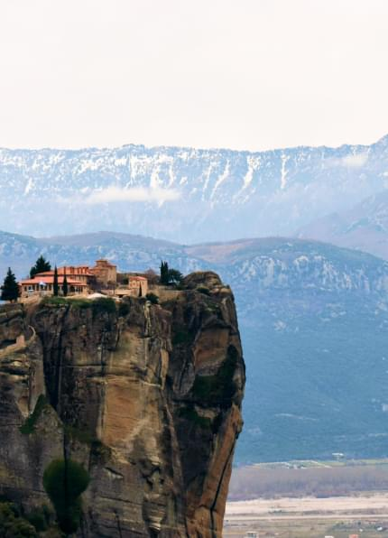
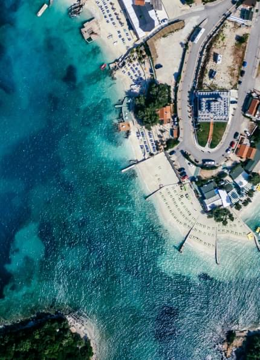
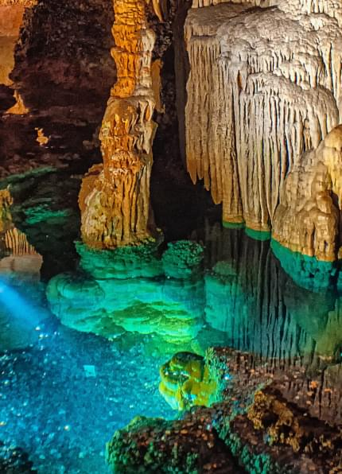

На севере Греции находится один из крупнейших комплексов монастырей, расположенных на вершинах скал. Название его «Метеора» буквально переводится как «висящие в воздухе». Этот монастырь основная цель нашего путешествия в Греции. После покарения скал из песчанника и обломочной горной породы, достигающих в высоту 600 метров, наградой будет неописуемая красота природы и атмосфера, царящая в монастырях Метеоры.

Отзывы
Метеоры в Греции можно сравнить разве что с Монсерратт в Испании. Такие же высоченные скалы. Но здесь потрясает масштаб. Огромная территория, высоко в горах. Ощущение такое, как будто стоишь на краю света!
Влада Голицина
Албания
В Албании мы посетим Курорт Ксамиль. Этот курорт поразит вас чистейшей водой и удивительным пляжем. Вначале кажется, что на пляже вас встречает обычный, правда невероятно белоснежный и слишком крупный песок. Однако, присмотревшись, можно понять, что это не песок, а камни, перетёртые до такого мелкого состояния.

Отзывы
Замечательный курорт, обязательно стоит посетить. В следующий раз возьму с собой сестру, чтобы тоже смогла вкусить все красоты природы :)
Маришка
Македония
В Македонии нашей целью будет посетить Палаошник, который расположился в удивительно красивой лесистой местности возле Охридского озера и Самуиловой твердыни. А также мы заберемся на вершину горы Татичев Камен где находится археологический памятник Кокино в длину около 100 метров.
Отзывы
Я бы сказал необычное старое здание. В архитектуре я не разбираюсь, но подъем в гору был очень веселым так как люди оказались легкими и заводными. Красота природы впечатлила, особенно после долгого пути в гору.
Михаил Кузьмин
Черногория
Черногория удивит нас самым большим в Европе каньоном реки Тара, который в некоторых местах высотой берегов доходит до 1300 метров, а шириной не превышает трех. При этом длина каньона составляет 80 км.
Отзывы
Неописуемой красоты каньон! Ничего прекраснее в жизни не видела, разве что в фильмах :) Всем советую
Анастасия Мей
Хорватия
В Хорватии мы посетим необычайную пещеру названную Бередине. Ее подземный мир увлечет вас на 80-ти метровую глубину через 5 освещенных залов, украшенных удивительными нерукотворными скульптурами — сталактитами и сталагмитами — формировавшимися тысячи и тысячи лет.

Отзывы
Мы поехали всей семьей, я, моя жена и родители. Пещера просто незабываема! А то, что все это формировалось тысячелетиями, мега необычно. Первоначально даже не верилось, но натур ни с чем не спутать по итогу :)
Владимир Мулицин
Комплексный
$1999
Ознакомьтесь с перечнем того, что входит в данный пакет
Разработанный маршрут с гидом группы
Перелет, трансфер и проживание в отелях
Завтраки, ужины в отелях и ланчи на природе
Экскурсии по удивительно красивым местам Европы
Экономный
$1399
Ознакомьтесь с перечнем того, что входит в данный пакет
Разработанный маршрут с гидом группы
Перелет и трансфер
Проживание в хостелах при отелях
Только завтраки в отелях
Экскурсии по удивительно красивым местам Европы
Цены
Специально для Вас мы разработали 2 пакета цен с разными условиями, отталкиваясь от Ваших потребностей и возможностей. Выберите для себя лучший вариант отпуска и отдохните на все 100%!